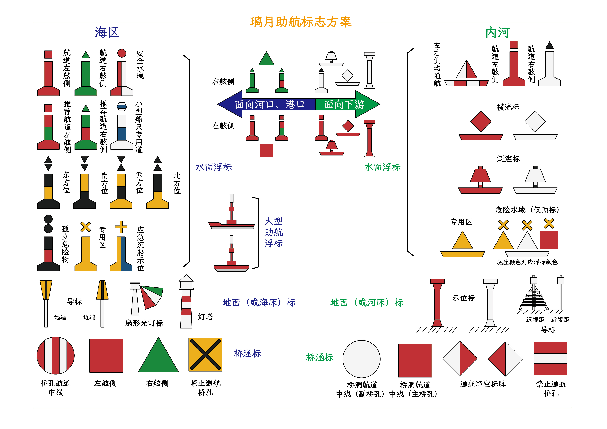

ACG架空世界二次创作
ACG Constructed Secondary Creations

概况 Overview
这里指受许可的对知名ACG架空世界的二次创作。
本人最得意的作品即是“现代化提瓦特设定”。
These refer to my permitted Secondary Creations of some famous ACG conworlds.
My most pleasant work is "the Modern Teyvat Settings".
“现代化提瓦特设定”是我结合了游戏《原神》的世界“提瓦特”的设定和我的奇思妙想所作出的一系列二创。
其中，我比较有名的作品有《璃月海事规划》《璃月电网》《现代化提瓦特》等。

这张图即是我的“现代化提瓦特设定”首作《璃月助航标志方案》。
现代化提瓦特设定集
the Modern Teyvat Settings
进入JoshuaWillow的米游社相关合集了解详情